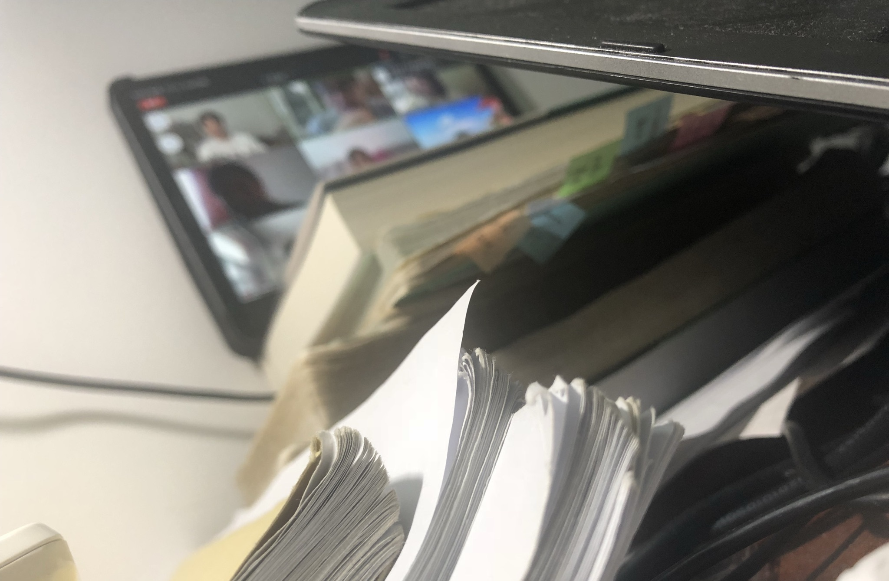

（后）疫情时代
在2020年左右，全球爆发了严重的新型冠状病毒的流行病，由于其对肺部的影响最为显著，被称为新冠肺炎。几乎全球的发展都或多或少地受到这次疫情的影响。2020年恰逢我在国内学习日语，由于疫情的影响，原定一年在吉林长春的学习缩短到只有三个月，剩下的时间改为了线上授课。

↑↑↑ 几乎一整年都是在网上远程授课在日本读博的时期刚好是后疫情时代，大家都清楚了新冠病毒的存在，做好个人防疫。疫情的影响让我减少了出去开会交流的次数，而且我是室内派的，即便这样，我仍被感染了一次。所幸我的博士还是顺利读完了。我也因此养成了戴口罩的习惯，不仅因为可以有效预防感冒，还因为我在日本得了花粉症。